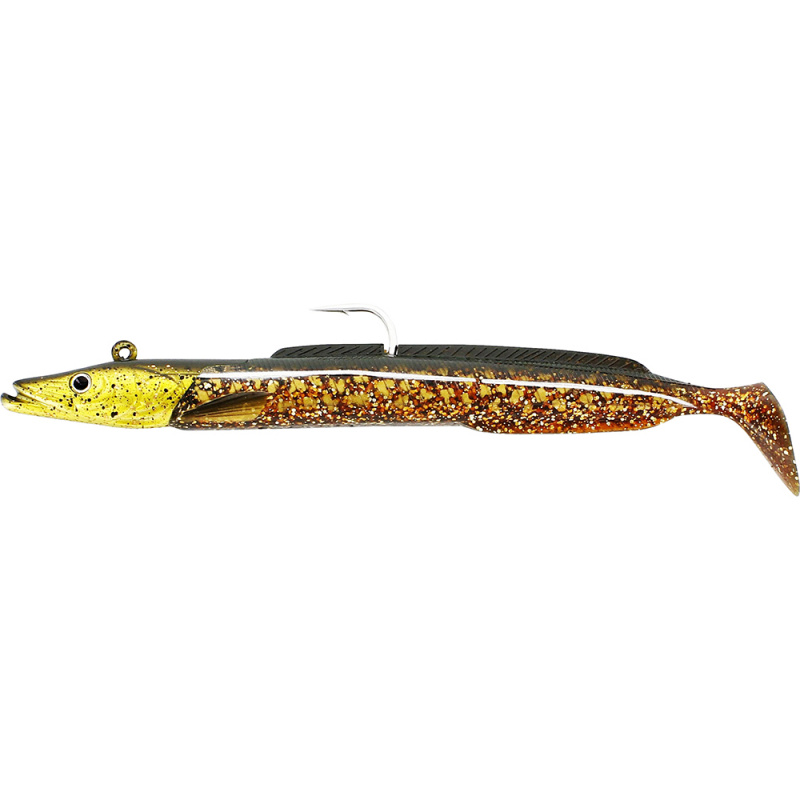
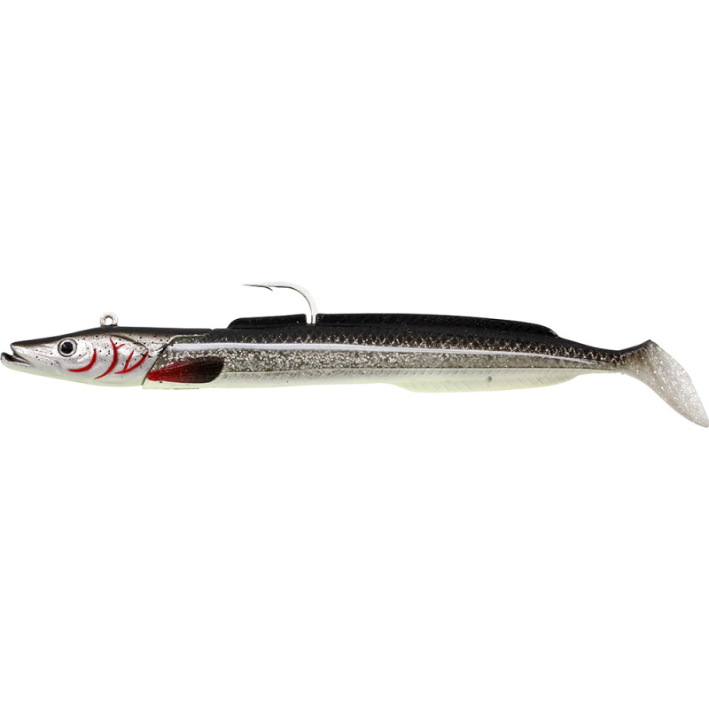
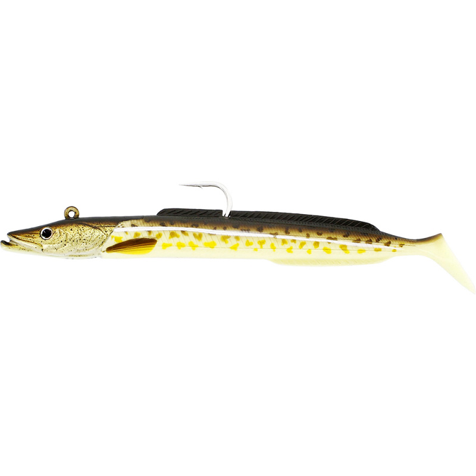
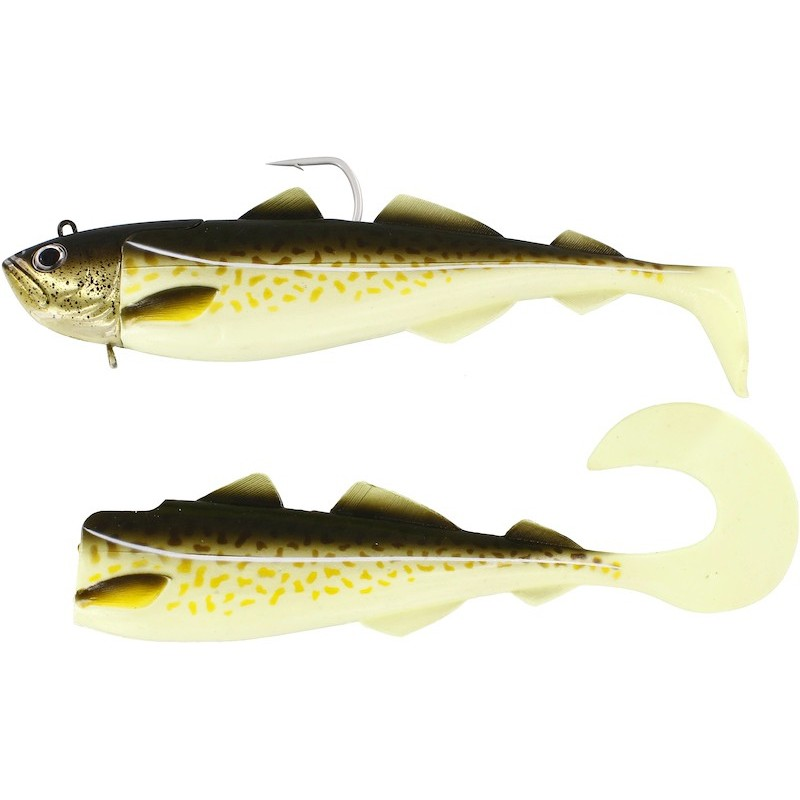
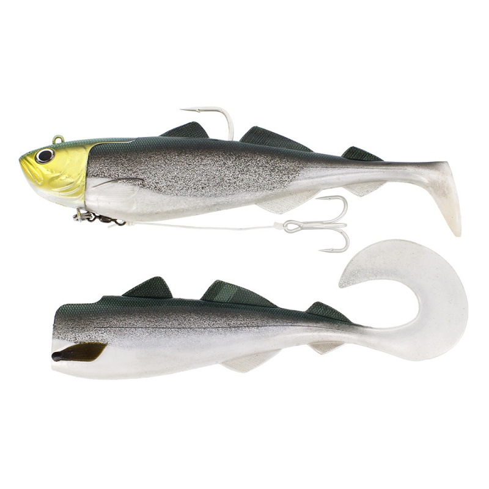

Westin Sandy Andy Jig · 150 g · 23 cm · Motoroil Gadus
CIEMNY
Kontrast gdy słońca brak
GŁĘBOKOŚĆ 10–50 m · prąd słaby/średni
KOLOR pochmurno · deszczowo · mętna/ciemna woda (ciemny kontrast)
Ciemny motoroil/oliwkowy z drobnym blaskiem — kontrastowy w słabym świetle. Najlepszy dokładnie wtedy, gdy słońca nie ma. Płytko-średnio nad szelfem.

SG Sandeel V2 BG · 275 g · 27,5 cm · Puffin
CIEMNY
Czarno-biały kontrast przy zachmurzeniu
GŁĘBOKOŚĆ 30–80 m · prąd mocny
KOLOR jasno + pochmurno (czarno-biało-pomarańczowy kontrast)
Maskonur działa też bez słońca: czarny grzbiet + biały brzuch dają czytelną sylwetkę pod pochmurnym niebem, niezależnie od UV. Killing zone 30–80 m. (Występuje też na liście słonecznej.)

Westin Sandy Andy Jig · 300 g · 28 cm · Robo Cod
GLOW (brzuch)
Imitacja dorsza, mieszane/słabe światło
GŁĘBOKOŚĆ 30–60 m · prąd średni/mocny
KOLOR pochmurno do mroku (luminescencyjny brzuch pomaga w głębi)
Robo Cod = wzór dorsza. Fosforyzujący brzuch (NIE UV) widoczny dłużej, gdy światło słabnie. Oszukuje halibuta i lingę kontrolujące żerujące dorsze.

Westin Sandy Andy Jig · 300 g · 28 cm · Glow Gadus
GLOW
Niska widoczność / głęboko
GŁĘBOKOŚĆ 30–80 m · prąd średni/mocny
KOLOR świt/zmierzch · pochmurno · głęboko (GLOW — naładuj latarką)
Świecący korpus (fosfor, nie UV). Stosuj tam, gdzie naturalne kolory już znikają (>~30 m w pochmurnym świetle). Naładuj przed dropem.

Westin Crazy Daisy Jig · 400 g · 27 cm · Glow Gadus
GLOW
Trofeowy halibut głęboko
GŁĘBOKOŚĆ 50–120 m+ · prąd mocny
KOLOR pochmurno · głęboko · świt/zmierzch (GLOW — naładuj latarką)
Kompletny jig 400 g (paddle + curl + głowica). Glow Gadus = fosfor. Top-tier dla halibuta w głębokim, ciemnym słupie wody, gdzie słońce nie sięga.

Westin Crazy Daisy Jig · 400 g · 27 cm · HeadLight
GLOW
Trofeowy halibut, słaba widoczność
GŁĘBOKOŚĆ 50–120 m+ · prąd mocny
KOLOR mętno · noc · głęboko (GLOW — głowa + korpus świecą)
Ciężka pałka — fosforyzująca głowa + jasny korpus. Wolno przy dnie, lekkimi twitchami w górę. Sørøya: ostatnie godziny pływu, prąd ~3 węzłów, brak słońca.